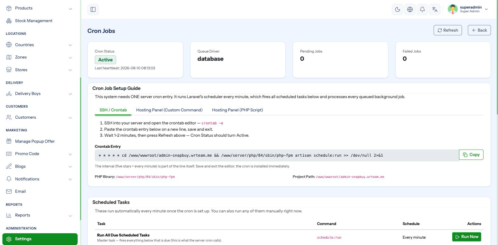
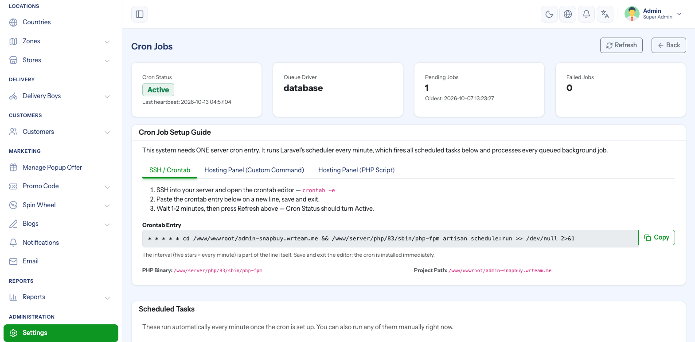
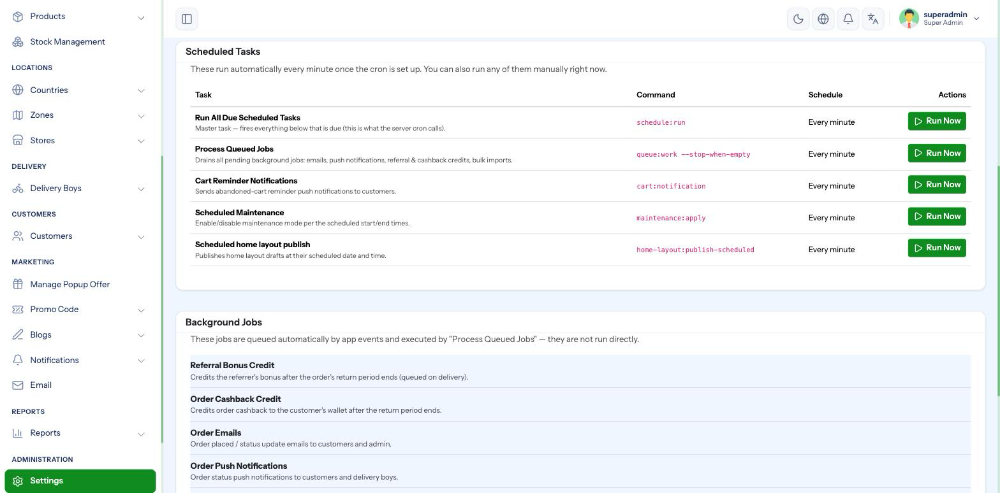
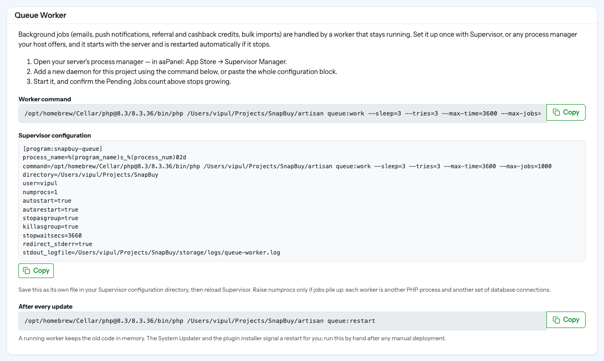
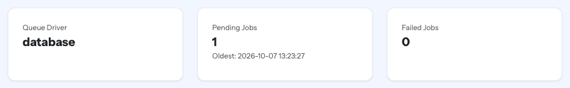

Cron Job Setup
Do not skip this page
SnapBuy needs two things running on the server, and they do different jobs:
- One cron entry, every minute. Without it abandoned-cart reminders never send, scheduled maintenance windows never start or end, scheduled home layouts and spin-wheel campaigns never publish, and courier tracking is never synced.
- One queue worker, always running. Without it every queued job — order emails, push notifications, bulk imports, referral bonuses, cashback — sits unprocessed forever.
Nothing on the dashboard warns you. Between them these are the single most common cause of “notifications are not working” support tickets.
The one line you need
SnapBuy uses Laravel's scheduler. You register one cron entry that runs every minute; SnapBuy decides internally what is due.
* * * * * cd /home/username/snapbuy && /usr/bin/php artisan schedule:run >> /dev/null 2>&1Copy the exact line from your panel
Do not type the paths by hand. Open Settings → Cron Jobs in the admin panel — it prints the correct line for your server, with the real project path and the real PHP binary already filled in, ready to copy.

The page gives the same command in three formats, because hosting panels ask for it differently:
| Format | Use it when |
|---|---|
| Crontab line | You have SSH and run crontab -e — interval included |
| Command only | Your control panel supplies its own interval picker |
| PHP script style | The panel asks for a PHP file plus arguments |
Registering the cron job
Open a shell on the server and run crontab -e, then paste the line shown on Settings → Cron Jobs. Save and exit — the entry takes effect immediately.
Use the full path to PHP
Cron runs with a minimal environment and may resolve php to a different version than your shell does. Use the absolute binary path shown on the Cron Jobs page — for example /usr/bin/php8.3. If the cron fires but nothing happens, this is usually why.
Verifying from the shell
crontab -eAdd the line, save and exit. Confirm it registered:
crontab -lVerifying it works
SnapBuy writes a heartbeat into the cache every minute from inside the scheduler. The Cron Jobs page reads it back, so you get a real answer rather than a guess.
- Add the cron job.
- Wait two minutes.
- Open Settings → Cron Jobs.
| Indicator | Meaning |
|---|---|
| 🟢 Cron active | The heartbeat is under 150 seconds old — your cron is firing correctly |
| 🔴 Cron inactive | No heartbeat, or older than 150 seconds — the cron is not running |

The Setup Guide step for Cron uses this same heartbeat, so it ticks itself off once the job runs.
What the scheduler runs every minute
| Task | Command | Runs | What it does |
|---|---|---|---|
| Heartbeat | (internal) | Every minute | Proves to the panel that cron is alive |
| Cart reminders | cart:notification | Every minute | Sends abandoned-cart notifications per your Cart Settings |
| Scheduled maintenance | maintenance:apply | Every minute | Turns maintenance mode on and off at the times you scheduled |
| Publish home layouts | home-layout:publish-scheduled | Every minute | Publishes Home Builder drafts at their scheduled time |
| Scheduled popup offer | popup:apply-schedule | Every minute | Turns the popup offer on and off at its scheduled times |
| Spin wheel campaigns | spin-wheel:apply-schedule | Every minute | Activates a campaign at its start time and retires it at its end |
| Expire spin wheel coupons | promo:expire-spin-codes | Daily, 00:30 | Deactivates won coupons past their validity. Nothing is deleted. |
| Courier tracking sync | shipping:sync-tracking | Every 30 minutes | Asks each carrier about parcels still in flight, so a delivery, COD settlement or RTO is recorded even when a webhook was lost. Does nothing when no shipping plugin is installed. |
Processing the queue is no longer on this list
Earlier versions drained the queue from the scheduler every minute. That job now belongs to a permanently running worker — see below. Process Queued Jobs still appears on the Cron Jobs page, but its schedule reads On demand: it is a button for “drain what is waiting right now and show me”, not something the cron fires.
Each of these can also be triggered manually from Settings → Cron Jobs using the Run now button — useful when testing, and for confirming a task works before you trust the schedule.

Work handled by the queue
These are not cron entries and not scheduled tasks. The application dispatches them as things happen, and the queue worker executes them:
- Referral bonus credit — after the order’s return period ends
- Order cashback credit — into the customer’s wallet, after the return period
- Order confirmation and status emails
- Order push notifications, to customers and delivery boys
- Bulk promotional emails
- Bulk push notifications
- Product bulk import
- App version update notifications
The Cron Jobs page lists them under Background Jobs, for reference only — there is no Run now button, because nothing schedules them.
The queue worker
The short version:
| Can your server run Supervisor (or any process manager that keeps a program alive)? | Set in .env | What runs the queue |
|---|---|---|
| Yes — VPS, dedicated server, aaPanel, cPanel with Supervisor | QUEUE_SCHEDULER_FALLBACK=false | A worker that stays running |
| No — basic shared hosting | QUEUE_SCHEDULER_FALLBACK=true | The minute cron drains the queue instead |
Most hosts can run Supervisor, so leave it false and set the worker up. Only switch it to true if your host genuinely will not let you keep a process alive.
A worker is a PHP process that stays running, waits on the queue and picks a job up within seconds. You set it up once with Supervisor — or whatever process manager your host offers — and it starts with the server and restarts itself if it dies.

The Queue Worker card on Settings → Cron Jobs prints everything for your server, with the real PHP binary, project path and system user already filled in:
| What the card gives you | Use it for |
|---|---|
| Worker command | The single command, if your host just asks for one |
| Supervisor configuration | A whole [program:…] block, ready to paste |
| After every update | php artisan queue:restart |
The steps, as the card states them:
- Open your server’s process manager — in aaPanel that is App Store → Supervisor Manager.
- Add a new daemon using the command, or paste the whole configuration block.
- Start it, and confirm Pending Jobs on this page stops growing.
Restart the worker after every deployment
A running worker holds the old code in memory, so new code does not take effect until it restarts. The System Updater and the plugin installer signal a restart for you. After a manual deployment, run php artisan queue:restart yourself — the card gives you the exact line.
Raise numprocs only when jobs pile up
One worker is right for almost every shop. Each extra one is another PHP process and another set of database connections, so add a second only if Pending Jobs keeps climbing while the worker is healthy.
Hosting that cannot run a daemon
Some shared hosting will not let you keep a process alive. For those, and only those, SnapBuy keeps the old behaviour behind an environment flag:
QUEUE_SCHEDULER_FALLBACK=trueWith it on, the minute scheduler runs queue:work --stop-when-empty --max-time=55 again: it drains whatever is waiting and exits before the next minute starts.
Leave it false wherever you can
The fallback costs a full application boot every minute whether or not there is any work, and a job dispatched just after a run waits up to a minute before anything looks at it. --max-time also cannot cut a long job short, so a slow one overlaps the next minute and doubles the database load.
The panel says so too: with the flag on, the Queue Worker card shows a notice that this installation is draining the queue from the scheduler and should move to a worker on a VPS.
Queue health
The Cron Jobs page reports queue status across the top and in the worker card:
| Field | What to look for |
|---|---|
| Driver | database by default |
| Pending jobs | A small number that keeps changing is normal. A number that only grows means nothing is working the queue. |
| Failed jobs | Should stay at zero. Anything here failed permanently. |
| Oldest pending job | A timestamp more than a couple of minutes old is the giveaway. |

“Jobs have been waiting for more than two minutes”
When the oldest pending job is over two minutes old, the page says so directly: nothing is processing the queue, and emails, notifications and bulk imports are stuck until a worker runs.
Either set the worker up, or press Run Now on Process Queued Jobs to clear the backlog while you do.
The sync driver has no queue at all
With QUEUE_CONNECTION=sync jobs run inside the web request that created them. Nothing is queued, so no worker is needed — but a slow job then makes the customer wait for it. Use database in production.
Troubleshooting
| Symptom | Cause | Fix |
|---|---|---|
| Cron Jobs page shows inactive after 5 minutes | Cron not registered, or wrong PHP path | Re-copy the line from the panel; use the absolute PHP binary |
| Cron registered but still inactive | Wrong project path in the command | Compare against Project path shown on the Cron Jobs page |
| Emails and notifications never arrive | No queue worker running | Set the worker up from the Queue Worker card; Pending jobs should stop growing |
| Panel warns jobs have waited over two minutes | The worker is not running, or died | Start it, check storage/logs/queue-worker.log, confirm Supervisor has autorestart=true |
| Everything arrives roughly a minute late | QUEUE_SCHEDULER_FALLBACK=true | Expected on that mode. Move to a real worker and set the flag back to false. |
| New code behaves like the old code in emails or imports | The worker still holds the old code | php artisan queue:restart |
| Failed jobs count rising | A job errors every time | Check storage/logs/laravel.log, or the /logs viewer |
Test without waiting
Instead of waiting on the schedule, open Settings → Cron Jobs and press Run now on a task. The panel shows the exit code and output immediately, which tells you whether the task itself works — separating a broken task from a broken cron.
Previous: ← Database & Migrations · Next: Setup Guide →